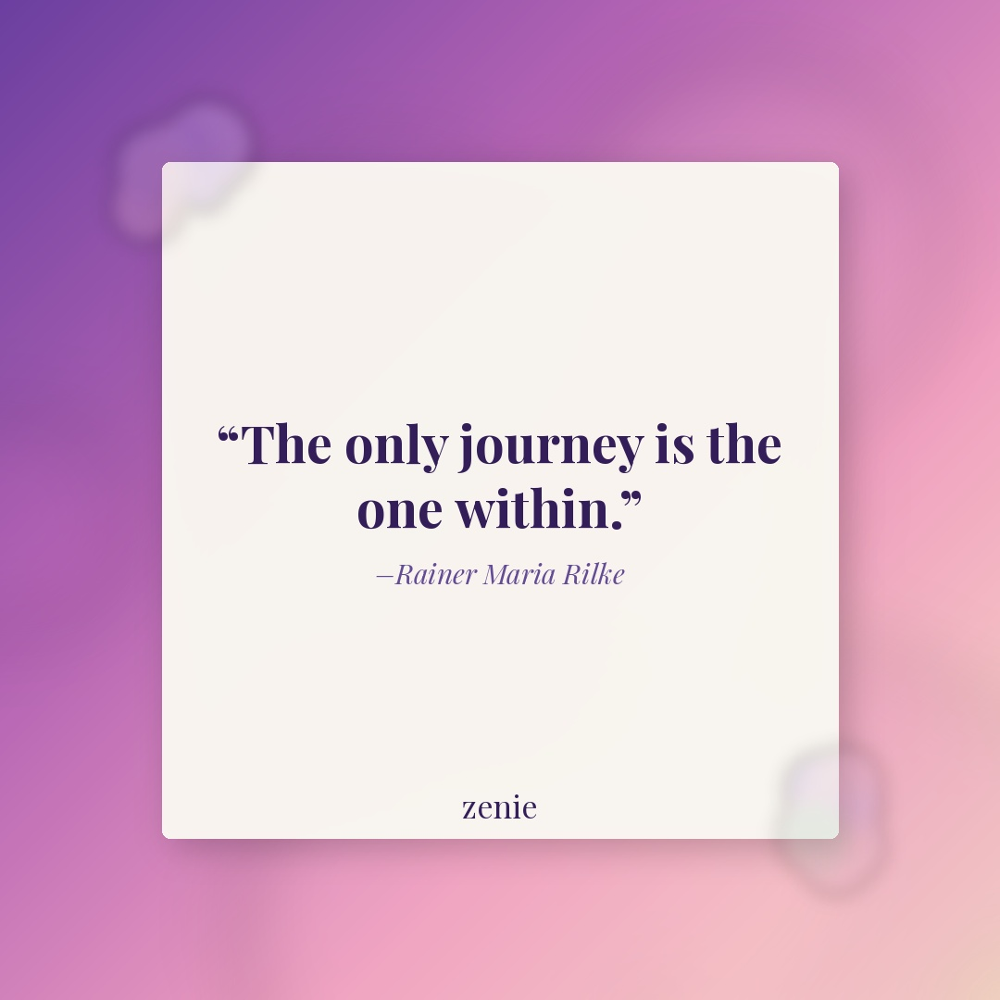
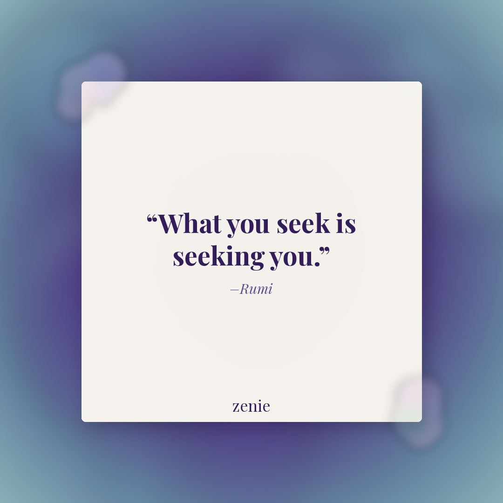

Meme 1
The audacity 😐
Best time: Tuesday 6–8 PM EST
The audacity 😐
Best time: Tuesday 6–8 PM EST
Rendered by GitHub Actions from library clip: spongebob_mocking
Overlay: him: 'i'm just really bad at texting back' 🙃
IG: The audacity 😐
FB: Okay but why do they all use the same excuse?? 😅 Drop a 💀 if you've heard this one before. Tag the friend who needs to see this.
Best time: Tuesday 6–8 PM EST
therapeutic tbh 🔥📓
Best time: Wednesday 6–8 PM EST
Rendered by GitHub Actions from library clip: this_is_fine
Overlay: me opening my journal to 'process' after the most chaotic week ever
IG: therapeutic tbh 🔥📓
FB: Everything was on fire this week... but somehow opening my journal and writing it all out fixed 60% of it? 😂 Are you a journaling girly? Drop a ✍️ below.
Best time: Wednesday 6–8 PM EST
Creator: @journalingoutloud
Take care of your mind — this reel is your sign to start journaling 📓✨ Save it, share it, and tag a bestie who needs this reminder. #Zenie #zenieapp #journaling #mindcare #selfcare
Watch on InstagramBest time: Tuesday 7–9 PM EST
Creator: @mindsetwithjournaling
Your mindset is everything — and journaling is how you train it 💜 Repost this to your story for the women in your life who are on a growth arc. #Zenie #zenieapp #growthmindset #journalingpractice #personaldevelopment
Watch on InstagramBest time: Thursday 6–8 PM EST

Quote: “The only journey is the one within.” — Rainer Maria Rilke
FB: Sometimes one sentence is all you need to realign yourself. ✨ Save this for the next time you're searching outside for what lives inside. Who does this land for today?
Best time: Thursday 7–9 PM EST (Facebook only)

Quote: “What you seek is seeking you.” — Rumi
FB: Let this one sit with you for a moment. 🌿 The things you're calling in — love, clarity, purpose — are already on their way to you. Share this with someone who needs the reminder.
Best time: Friday 6–8 PM EST (Facebook only)